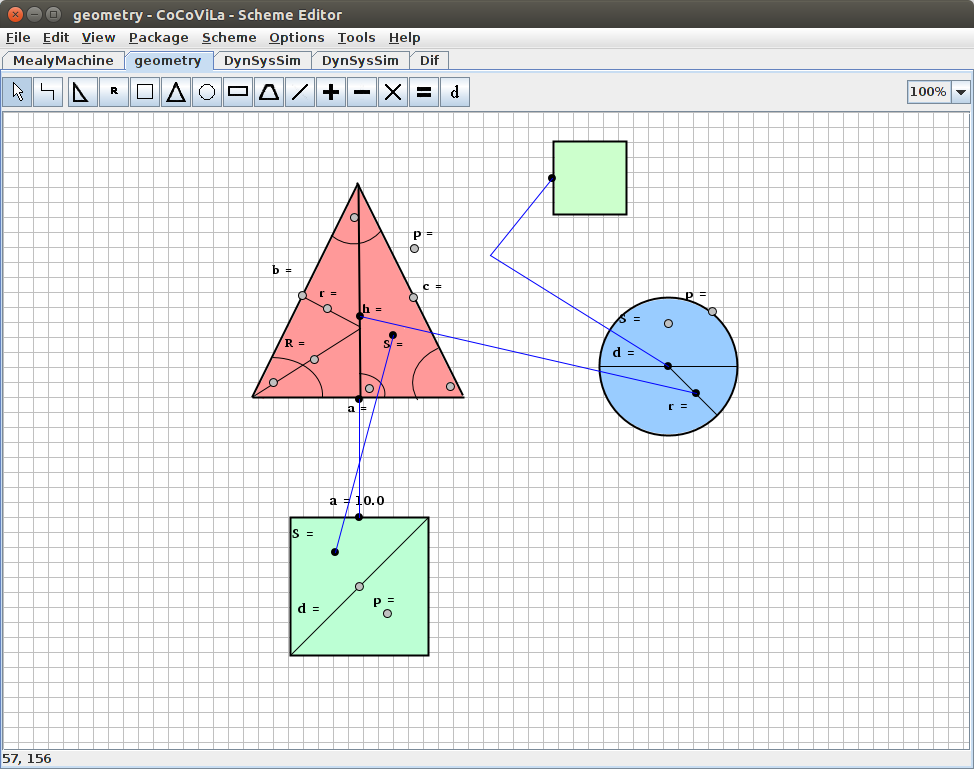
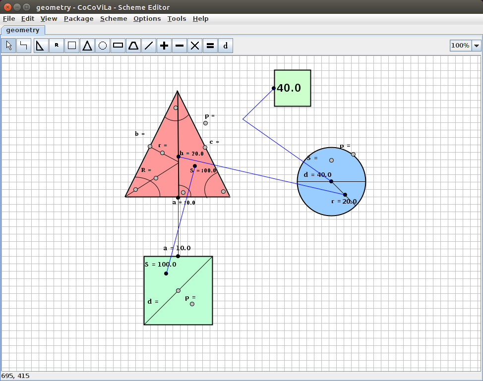

A CoCoVila package, that solves basic geometric problems.
The package allows solving problems that consist of basic geometric shapes such as a circle, a triangle a trapezoid or a rectangle. It is a good introductory package for someone who has never used CoCoViLa before. The geometry used is easy enough to understand quickly and the shapes are fun to play with.
Above we have created a problem, in which the base of a triangle has an equal length with a side of a square and the height of a triangle on that base is equal to the radius of the circle. The areas of square and triangle are also equal. We wish to calculate the diameter of the circle. Below is the result that CoCoViLa produces.
